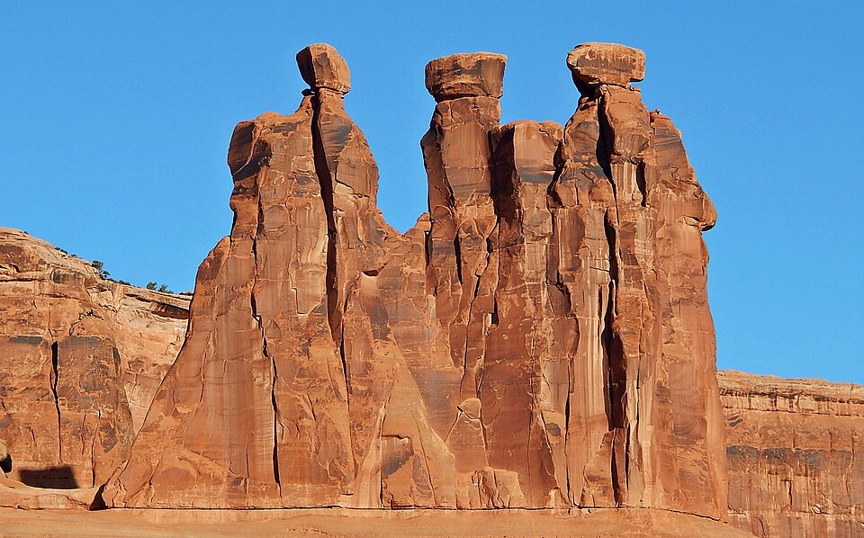

Three sandstone towers share a rocky base. A tilted cap tops the left tower. Broad caps top the middle and right towers, with a shorter shoulder between them. Drag or use the arrow keys to orbit. Use the mouse wheel, pinch, or press plus and minus to zoom.
